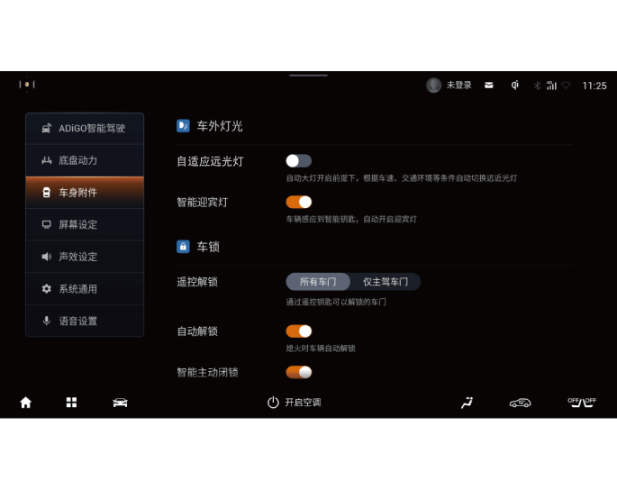

2.将车灯开关拧至AUTO位置①且在近光挡位，环境亮度较低近光自动打开的前提下，车速大于25km/h，允许自适应远光灯ADB功能激活，此时远光灯进入智能控制状态，车速低于15km/h则会自动退出自适应远光灯。
5.4.9 自适应远光灯*
自适应远光灯简称ADB，是一种能够根据路况自适应变换远光光型的智能远光控制系统。根据本车行驶状态、环境状态以及道路上其它车辆状态，ADB系统自动为驾驶员开启或退出远光灯；根据本车前方视野中的车辆位置，自适应变换远光光型，以避免对其它道路使用者造成眩目。
开启自适应远光灯
1.整车电源在“ON”挡位，通过音响系统“设置→车身附件→车灯”界面，短按“智能远光灯（ADB）”右侧 软按键设置为开启，ADB功能进入待机状态，关闭时，车辆不能触发ADB功能。
软按键设置为开启，ADB功能进入待机状态，关闭时，车辆不能触发ADB功能。


–如果智能前摄像头检测到当前道路有成排的路灯，远光灯不会自动开启。
–在无路灯道路，系统会根据前方车辆位置自动切换远光光型，避免导致前方车辆驾驶员炫目，同时其它区域保持远光照明。
注意
+
–在恶劣天气如大雾（用户手动开启雾灯）或下大雨（雨刮快速刮动）时，为保证行驶安全，远光灯不会自动开启。
–当参与功能实现的零件发生故障或有系统故障时，远光灯不会自动开启。
— 页面到底了 —